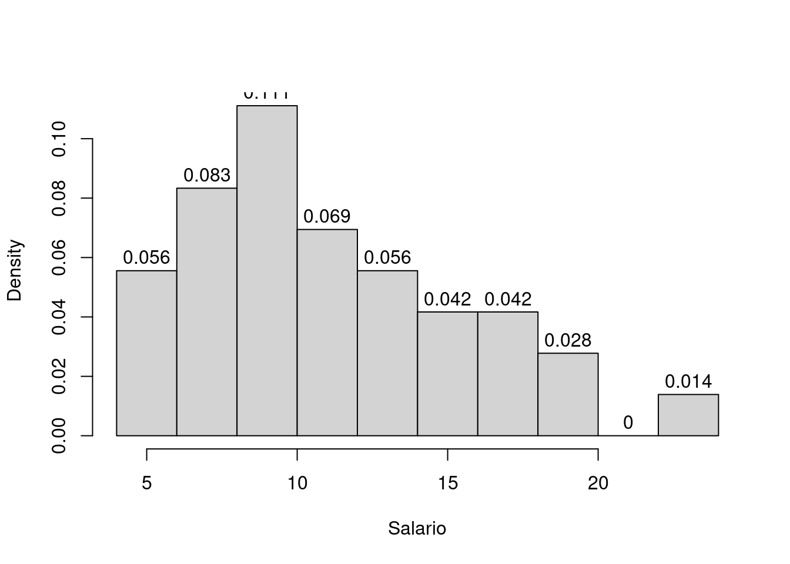
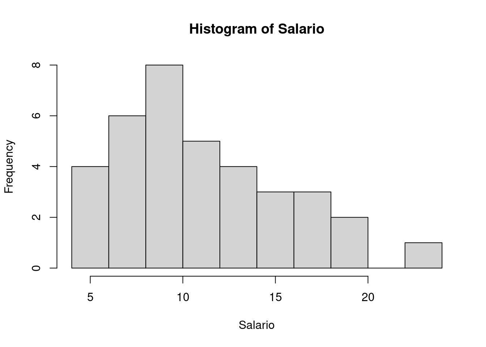

6 Análise exploratória de dados
Nesta sessão vamos ver alguns (mas não todos!) comandos do R para fazer uma análise descritiva de um conjunto de dados.
Uma boa forma de iniciar uma análise descritiva adequada é verificar os tipos de variáveis disponíveis. Variáveis podem ser classificadas da seguinte forma:
- Qualitativas
- Nominais
- Ordinais
- Quantitativas
- Discretas
- Contínuas
e podem ser resumidas por tabelas, gráficos e/ou medidas de tendência central e dispersão.
6.1 O conjunto de dados milsa
O livro “Estatística Básica” dos Profs Wilton Bussab e Pedro Morettin (bussab+morettin:2017?) traz no segundo capítulo um conjunto de dados hipotético de atributos de 36 funcionários da companhia “Milsa”. Os dados estão reproduzidos na tabela a seguir. Consulte o livro para mais detalhes sobre este dados.
| Funcionario | Est.civil | Inst | Filhos | Salario | Anos | Meses | Regiao |
|---|---|---|---|---|---|---|---|
| 1 | solteiro | 1o Grau | NA | 4.00 | 26 | 3 | interior |
| 2 | casado | 1o Grau | 1 | 4.56 | 32 | 10 | capital |
| 3 | casado | 1o Grau | 2 | 5.25 | 36 | 5 | capital |
| 4 | solteiro | 2o Grau | NA | 5.73 | 20 | 10 | outro |
| 5 | solteiro | 1o Grau | NA | 6.26 | 40 | 7 | outro |
| 6 | casado | 1o Grau | 0 | 6.66 | 28 | 0 | interior |
| 7 | solteiro | 1o Grau | NA | 6.86 | 41 | 0 | interior |
| 8 | solteiro | 1o Grau | NA | 7.39 | 43 | 4 | capital |
| 9 | casado | 2o Grau | 1 | 7.59 | 34 | 10 | capital |
| 10 | solteiro | 2o Grau | NA | 7.44 | 23 | 6 | outro |
| 11 | casado | 2o Grau | 2 | 8.12 | 33 | 6 | interior |
| 12 | solteiro | 1o Grau | NA | 8.46 | 27 | 11 | capital |
| 13 | solteiro | 2o Grau | NA | 8.74 | 37 | 5 | outro |
| 14 | casado | 1o Grau | 3 | 8.95 | 44 | 2 | outro |
| 15 | casado | 2o Grau | 0 | 9.13 | 30 | 5 | interior |
| 16 | solteiro | 2o Grau | NA | 9.35 | 38 | 8 | outro |
| 17 | casado | 2o Grau | 1 | 9.77 | 31 | 7 | capital |
| 18 | casado | 1o Grau | 2 | 9.80 | 39 | 7 | outro |
| 19 | solteiro | Superior | NA | 10.53 | 25 | 8 | interior |
| 20 | solteiro | 2o Grau | NA | 10.76 | 37 | 4 | interior |
| 21 | casado | 2o Grau | 1 | 11.06 | 30 | 9 | outro |
| 22 | solteiro | 2o Grau | NA | 11.59 | 34 | 2 | capital |
| 23 | solteiro | 1o Grau | NA | 12.00 | 41 | 0 | outro |
| 24 | casado | Superior | 0 | 12.79 | 26 | 1 | outro |
| 25 | casado | 2o Grau | 2 | 13.23 | 32 | 5 | interior |
| 26 | casado | 2o Grau | 2 | 13.60 | 35 | 0 | outro |
| 27 | solteiro | 1o Grau | NA | 13.85 | 46 | 7 | outro |
| 28 | casado | 2o Grau | 0 | 14.69 | 29 | 8 | interior |
| 29 | casado | 2o Grau | 5 | 14.71 | 40 | 6 | interior |
| 30 | casado | 2o Grau | 2 | 15.99 | 35 | 10 | capital |
| 31 | solteiro | Superior | NA | 16.22 | 31 | 5 | outro |
| 32 | casado | 2o Grau | 1 | 16.61 | 36 | 4 | interior |
| 33 | casado | Superior | 3 | 17.26 | 43 | 7 | capital |
| 34 | solteiro | Superior | NA | 18.75 | 33 | 7 | capital |
| 35 | casado | 2o Grau | 2 | 19.40 | 48 | 11 | capital |
| 36 | casado | Superior | 3 | 23.30 | 42 | 2 | interior |
Estes dados estão disponíveis em um arquivo csv no endereço
http://www.leg.ufpr.br/~fernandomayer/data/milsa.csv.
O nosso objetivo é, através do R,
- entrar com os dados;
- fazer uma preparação dos dados;
- fazer uma análise descritiva.
Estes são dados no “estilo planilha”, com variáveis de diferentes tipos:
categóricas e numéricas (qualitativas e quantitativas). Portanto o
formato ideal de armazenamento destes dados no R é o data.frame.
Para importar os dados do endereço acima diretamente para o R, usamos
url <- "http://www.leg.ufpr.br/~fernandomayer/data/milsa.csv"
milsa <- read.csv(url)E para conferir a estrutura dos dados podemos usar algumas funções como:
str(milsa)
'data.frame': 36 obs. of 8 variables:
$ Funcionario: int 1 2 3 4 5 6 7 8 9 10 ...
$ Est.civil : chr "solteiro" "casado" "casado" "solteiro" ...
$ Inst : chr "1o Grau" "1o Grau" "1o Grau" "2o Grau" ...
$ Filhos : int NA 1 2 NA NA 0 NA NA 1 NA ...
$ Salario : num 4 4.56 5.25 5.73 6.26 6.66 6.86 7.39 7.59 7.44 ...
$ Anos : int 26 32 36 20 40 28 41 43 34 23 ...
$ Meses : int 3 10 5 10 7 0 0 4 10 6 ...
$ Regiao : chr "interior" "capital" "capital" "outro" ...
head(milsa)
Funcionario Est.civil Inst Filhos Salario Anos Meses Regiao
1 1 solteiro 1o Grau NA 4.00 26 3 interior
2 2 casado 1o Grau 1 4.56 32 10 capital
3 3 casado 1o Grau 2 5.25 36 5 capital
4 4 solteiro 2o Grau NA 5.73 20 10 outro
5 5 solteiro 1o Grau NA 6.26 40 7 outro
6 6 casado 1o Grau 0 6.66 28 0 interior
tail(milsa)
Funcionario Est.civil Inst Filhos Salario Anos Meses Regiao
31 31 solteiro Superior NA 16.22 31 5 outro
32 32 casado 2o Grau 1 16.61 36 4 interior
33 33 casado Superior 3 17.26 43 7 capital
34 34 solteiro Superior NA 18.75 33 7 capital
35 35 casado 2o Grau 2 19.40 48 11 capital
36 36 casado Superior 3 23.30 42 2 interiorPodemos classificar todas as variáveis desse conjunto de dados como:
| Variável | Classificação |
|---|---|
Funcionario |
Quantitativa discreta |
Est.civil |
Qualitativa nominal |
Inst |
Qualitativa ordinal |
Filhos |
Quantitativa discreta |
Salario |
Quantitativa contínua |
Anos |
Quantitativa contínua |
Meses |
Quantitativa contínua |
Regiao |
Qualitativa nominal |
Como a variável Inst é qualitativa ordinal, podemos indicar para o R
que ela deve ser tratada como ordinal. Se observarmos os níveis desse
fator:
levels(milsa$Inst)
NULLjá notamos que a ordenação está correta (da esquerda para a direita),
pois sabemos que a classificação interna dos níveis é por ordem
alfabética, e nesse caso, por coincidência, a ordem já está na sequência
correta. Mesmo assim, podemos indicar que este fator é ordinal, usando o
argumento ordered da função factor()
milsa$Inst <- factor(milsa$Inst, ordered = TRUE)Caso as classes em ordem alfabética não estivessem na ordem desejada feriamos a definição mais detalhada com:]
milsa$Inst <- factor(milsa$Inst,
levels = c("1o Grau", "2o Grau", "Superior"),
labels = c("1o Grau", "2o Grau", "Superior"),
ordered = TRUE)O argumento levels deve conter os valores que a variável assume na ordem desejada e labels são rótulos que serão usados para se referir a estes valores e que não necessáriamente precisam ter o mesmo nome que levels , mas precisam estar na ordem correta.
Note agora a modificação na classe dessa coluna, e a representação dos níveis:
class(milsa$Inst)
[1] "ordered" "factor"
milsa$Inst
[1] 1o Grau 1o Grau 1o Grau 2o Grau 1o Grau 1o Grau 1o Grau 1o Grau
[9] 2o Grau 2o Grau 2o Grau 1o Grau 2o Grau 1o Grau 2o Grau 2o Grau
[17] 2o Grau 1o Grau Superior 2o Grau 2o Grau 2o Grau 1o Grau Superior
[25] 2o Grau 2o Grau 1o Grau 2o Grau 2o Grau 2o Grau Superior 2o Grau
[33] Superior Superior 2o Grau Superior
Levels: 1o Grau < 2o Grau < SuperiorA coluna continua sendo um factor, mas agora também é ordered (sim,
um objeto pode ter mais de uma classe, se elas foram compatíveis e/ou
complementares). Os níveis agora são representados por
1o Grau < 2o Grau < Superiorpara indicar explicitamente que existe uma ordem nos níveis desse fator.
Podemos ainda definir uma nova variável, chamada Idade, a partir das
variáveis Anos e Meses:
milsa$Idade <- milsa$Anos + milsa$Meses/12Aproveitamos este comando para ilustrar uma opção interessante: usar with para referenciar diretamente a variávelo que vai ser tratado pelo comando. Desta forma elimina-se a necessidade de digitar milsa$ mais de uma vez.
milsa$Idade <- with(milsa, Anos + Meses/12)Os dois comandos acima (de modificação da classe de uma variável, e a
criação de uma nova variável) poderiam ser facilmente executadas de uma
única vez através do comando transform()
milsa <- transform(milsa,
Inst = factor(Inst, ordered = TRUE),
Idade = Anos + Meses/12)Agora que os dados estão prontos podemos começar a análise descritiva. A seguir mostramos como fazer análises descritivas uni e bivariadas. Inspecione os comandos mostrados a seguir e os resultados por eles produzidos. Sugerimos ainda que o leitor use o R para reproduzir os resultados mostrados no texto dos capítulos 1 a 3 do livro de Bussab & Morettin, relacionados com este exemplo. Veja aqui os scripts do livro.
6.2 Análise univariada
A análise univariada consiste basicamente em, para cada uma das variáveis individualmente:
- Classificar a variável quanto a seu tipo: qualitativa (nominal ou ordinal) ou quantitativa (discreta ou contínua).
- Obter tabelas, gráficos e/ou medidas que resumam a variável.
A partir destes resultados pode-se montar um resumo geral dos dados.
A seguir vamos mostrar como obter tabelas, gráficos e medidas com o R. Para isto vamos selecionar uma variável de cada tipo para que o leitor possa, por analogia, obter resultados para as demais.
6.2.1 Variável Qualitativa Nominal
A variável Est.civil é uma qualitativa nominal. Desta forma podemos
obter: (i) uma tabela de frequências (absolutas e/ou relativas), (ii) um
gráfico de setores, (iii) a “moda”, i.e. o valor que ocorre com maior
frequência.
Já vimos, através do resultado da função str() acima, que esta
variável é um fator. A seguir obtemos frequências absolutas e relativas
(note duas formas diferentes de obter as frequências relativas).
## Frequência absoluta
civil.tb <- with(milsa, table(Est.civil))
civil.tb
Est.civil
casado solteiro
20 16
## Frequência relativa, calculando manualmente
civil.tb/sum(civil.tb)
Est.civil
casado solteiro
0.5555556 0.4444444
## Frequência relativa, com a função prop.table()
prop.table(civil.tb)
Est.civil
casado solteiro
0.5555556 0.4444444 Os gráficos de barras e de setores são adequados para representar esta
variável. Os comandos barplot() e pie() usam o resultado da função
table() para gerar os gráficos:
par(mfrow = c(1,2), mar=c(3,3,0.5,0.5))
barplot(civil.tb)
pie(civil.tb)
par(mfrow = c(1,1))
A moda de qualquer variável aleatória é definida como o valor mais frequente encontrado na amostra. No R não há uma função pronta para “calcular” a moda, pois ela pode ser obtida facilmente através do uso de funções básicas. Uma opção seria usar os comandos abaixo:
names(civil.tb)[which.max(civil.tb)]
[1] "casado"Deixamos a cargo do leitor entender e interpretar esse comando.
6.2.2 Variável Qualitativa Ordinal
Para exemplificar como obter análises para uma variável qualitativa
ordinal vamos selecionar a variável Inst.
As tabelas de frequências são obtidas de forma semelhante à mostrada anteriormente.
## Frequência absoluta
inst.tb <- with(milsa, table(Inst))
inst.tb
Inst
1o Grau 2o Grau Superior
12 18 6
## Frequência relativa
prop.table(inst.tb)
Inst
1o Grau 2o Grau Superior
0.3333333 0.5000000 0.1666667 O gráfico de setores não é adequado para este tipo de variável por não expressar a ordem dos possíveis valores. Usamos então apenas um gráfico de barras conforme mostrado abaixo
barplot(inst.tb)
Em alguns casos podemos querer mostrar o gráfico de barras com as barras
classificadas da menor para a maior, ou vice-versa, independente da
ordem dos níveis. Para isso podemos usar a função sort() para ordenar
os valores da tabela e fazer o gráfico
par(mfrow = c(1,2))
## Menor para maior
barplot(sort(inst.tb))
## Maior para menor
barplot(sort(inst.tb, decreasing = TRUE))
par(mfrow = c(1,1))
Para uma variável ordinal, além da moda podemos também calcular outras
medidas, tais como a mediana conforme exemplificado a seguir. Note que
o comando median() não funciona com variáveis não numéricas, e por
isso usamos o comando seguinte.
## Moda
names(inst.tb)[which.max(inst.tb)]
[1] "2o Grau"
## Mediana
with(milsa, median(Inst)) # só funciona para variáveis numéricas
Error in median.default(Inst): need numeric data
with(milsa, median(as.numeric(Inst))) # traz a mediana da codificação do nível
[1] 2
with(milsa, levels(Inst)[median(as.numeric(Inst))]) # valor correto
[1] "2o Grau"6.2.3 Variável quantitativa discreta
Vamos agora usar a variável Filhos (número de filhos) para
ilustrar algumas análises que podem ser feitas com uma quantitativa
discreta.
Frequências absolutas e relativas são obtidas como anteriormente. Também
vamos calcular a frequência acumulada, onde a frequência em uma classe é
a soma das frequências das classes anteriores. Para isso usamos a função
cumsum(), que já faz a soma acumulada.
## Frequência absoluta
filhos.tb <- with(milsa, table(Filhos))
filhos.tb
Filhos
0 1 2 3 5
4 5 7 3 1
## Frequência relativa
filhos.tbr <- prop.table(filhos.tb)
filhos.tbr
Filhos
0 1 2 3 5
0.20 0.25 0.35 0.15 0.05
## Frequência acumulada
filhos.tba <- cumsum(filhos.tbr)
filhos.tba
0 1 2 3 5
0.20 0.45 0.80 0.95 1.00 O gráfico adequado para frequências absolutas de uma variável discreta é
parecido com um gráfico de barras, mas nesse caso, as frequências são
indicadas por linhas. Usando a função plot() em um objeto resultado da
função table(), o gráfico adequado já é selecionado:
plot(filhos.tb)Outra possibilidade seria fazer gráficos de frequências relativas e de frequências acumuladas conforme mostrado na
par(mfrow = c(1,2))
## Frequência relativa
plot(filhos.tbr)
## Frequência relativa acumulada
plot(filhos.tba, type = "S") # tipo step (escada)
par(mfrow = c(1,1))Sendo a variável numérica há uma maior diversidade de medidas estatísticas que podem ser calculadas.
A seguir mostramos como obter algumas medidas de posição: moda, mediana,
média e média aparada. Note que o argumento na.rm = TRUE é necessário
porque não há informação sobre número de filhos para alguns indivíduos
(NA). Para calcular a média aparada, usamos o argumento trim = 0.1
que indica que a média deve ser calculada excluindo-se 10% dos menores e
10% dos maiores valores do vetor de dados. Ao final mostramos como obter
os quartis, incluido o mínimo e o máximo.
## Moda
names(filhos.tb)[which.max(filhos.tb)]
[1] "2"
## Mediana
median(milsa$Filhos, na.rm = TRUE)
[1] 2
## Média
with(milsa, mean(Filhos, na.rm = TRUE))
[1] 1.65
## Média aparada
with(milsa, mean(Filhos, trim = 0.1, na.rm = TRUE))
[1] 1.5625
## Quartis
with(milsa, quantile(Filhos, na.rm = TRUE))
0% 25% 50% 75% 100%
0 1 2 2 5 Passando agora para medidas de dispersão, vejamos como obter o máximo e mínimo, e com isso a amplitude, além da variância, desvio padrão, e coeficiente de variação. Também obtemos os quartis para calcular a amplitude interquartílica.
## Máximo e mínimo
with(milsa, max(Filhos, na.rm = TRUE))
[1] 5
with(milsa, min(Filhos, na.rm = TRUE))
[1] 0
## As duas informações juntas
with(milsa, range(Filhos, na.rm = TRUE))
[1] 0 5
## Amplitude é a diferença entre máximo e mínimo
with(milsa, diff(range(Filhos, na.rm = TRUE)))
[1] 5
## Variância
with(milsa, var(Filhos, na.rm = TRUE))
[1] 1.607895
## Desvio-padrão
with(milsa, sd(Filhos, na.rm = TRUE))
[1] 1.268028
## Coeficiente de variação
with(milsa, 100*sd(Filhos, na.rm = TRUE)/mean(Filhos, na.rm = TRUE))
[1] 76.85018
## Quartis
(filhos.qt <- with(milsa, quantile(Filhos, na.rm = TRUE)))
0% 25% 50% 75% 100%
0 1 2 2 5
## Amplitude interquartílica
filhos.qt[4] - filhos.qt[2]
75%
1 Finalmente, podemos usar a função genérica summary() para resumir
os dados de uma só vez
with(milsa, summary(Filhos))
Min. 1st Qu. Median Mean 3rd Qu. Max. NA's
0.00 1.00 2.00 1.65 2.00 5.00 16 6.2.4 Variável quantitativa contínua
Para concluir os exemplos para análise univariada vamos considerar a
variável quantitativa contínua Salario.
Para se fazer uma tabela de frequências de uma variável contínua, é preciso
primeiro agrupar os dados em classes. Nos comandos mostrados a seguir
verificamos inicialmente os valores máximo e mínimo dos dados, depois
usamos o critério de Sturges para definir o número de classes. Usamos
a função cut() para agrupar os dados em classes e finalmente obtemos
as frequências absolutas e relativas.
## Máximo e mínimo
with(milsa, range(Salario))
[1] 4.0 23.3
## Número de classes estimado, com base no critério de Sturges. Veja
## outras opções em ?nclass
with(milsa, nclass.Sturges(Salario))
[1] 7
## Criando as classes com a função cut(), usando os valores mínimos e
## máximos dados em range()
with(milsa, cut(Salario, breaks = seq(4, 23.3, length.out = 8)))
[1] <NA> (4,6.76] (4,6.76] (4,6.76] (4,6.76] (4,6.76]
[7] (6.76,9.51] (6.76,9.51] (6.76,9.51] (6.76,9.51] (6.76,9.51] (6.76,9.51]
[13] (6.76,9.51] (6.76,9.51] (6.76,9.51] (6.76,9.51] (9.51,12.3] (9.51,12.3]
[19] (9.51,12.3] (9.51,12.3] (9.51,12.3] (9.51,12.3] (9.51,12.3] (12.3,15]
[25] (12.3,15] (12.3,15] (12.3,15] (12.3,15] (12.3,15] (15,17.8]
[31] (15,17.8] (15,17.8] (15,17.8] (17.8,20.5] (17.8,20.5] (20.5,23.3]
7 Levels: (4,6.76] (6.76,9.51] (9.51,12.3] (12.3,15] (15,17.8] ... (20.5,23.3]Note que uma das classes é NA. Isso ocorre pela definição das classes,
que por padrão é no formato (a,b], ou seja, o intervalo é aberto em
a (não inclui a) e fechado em b (inclui b). Podemos alterar esse
padrão usando o argumento include.lowest = TRUE,
with(milsa, cut(Salario, breaks = seq(4, 23.3, length.out = 8),
include.lowest = TRUE))
[1] [4,6.76] [4,6.76] [4,6.76] [4,6.76] [4,6.76] [4,6.76]
[7] (6.76,9.51] (6.76,9.51] (6.76,9.51] (6.76,9.51] (6.76,9.51] (6.76,9.51]
[13] (6.76,9.51] (6.76,9.51] (6.76,9.51] (6.76,9.51] (9.51,12.3] (9.51,12.3]
[19] (9.51,12.3] (9.51,12.3] (9.51,12.3] (9.51,12.3] (9.51,12.3] (12.3,15]
[25] (12.3,15] (12.3,15] (12.3,15] (12.3,15] (12.3,15] (15,17.8]
[31] (15,17.8] (15,17.8] (15,17.8] (17.8,20.5] (17.8,20.5] (20.5,23.3]
7 Levels: [4,6.76] (6.76,9.51] (9.51,12.3] (12.3,15] (15,17.8] ... (20.5,23.3]E note que agora a primeira classe fica [a,b], ou seja, fechada
(incluindo) os dois lados. Para que o intervalo seja fechado à esquerda,
usamos o argumento right = FALSE. As combinações possíveis para esses
dois argumentos, e as classes resultantes são apresentadas na tabela
abaixo:
| Argumentos | Resultado |
|---|---|
include.lowest = T, right = T |
[a,b], ..., (y,z] |
include.lowest = F, right = T |
(a,b], ..., (y,z] |
include.lowest = F, right = F |
[a,b), ..., [y,z) |
include.lowest = T, right = F |
[a,b), ..., [y,z] |
Outra opção para “acomodar” todos os extremos dentro das classes, seria naturalmente atribuir valores um pouco menores que o mínimo, e um pouco maiores que o máximo. Abaixo, usamos essa abordagem e fazemos uma tabela com as frequências absolutas e relativas.
salario.cut <- with(milsa,
cut(Salario, breaks = seq(3.5, 23.5, length.out = 8)))
salario.cut
[1] (3.5,6.36] (3.5,6.36] (3.5,6.36] (3.5,6.36] (3.5,6.36] (6.36,9.21]
[7] (6.36,9.21] (6.36,9.21] (6.36,9.21] (6.36,9.21] (6.36,9.21] (6.36,9.21]
[13] (6.36,9.21] (6.36,9.21] (6.36,9.21] (9.21,12.1] (9.21,12.1] (9.21,12.1]
[19] (9.21,12.1] (9.21,12.1] (9.21,12.1] (9.21,12.1] (9.21,12.1] (12.1,14.9]
[25] (12.1,14.9] (12.1,14.9] (12.1,14.9] (12.1,14.9] (12.1,14.9] (14.9,17.8]
[31] (14.9,17.8] (14.9,17.8] (14.9,17.8] (17.8,20.6] (17.8,20.6] (20.6,23.5]
7 Levels: (3.5,6.36] (6.36,9.21] (9.21,12.1] (12.1,14.9] ... (20.6,23.5]
## Tabela com as frequencias absolutas por classe
salario.tb <- table(salario.cut)
salario.tb
salario.cut
(3.5,6.36] (6.36,9.21] (9.21,12.1] (12.1,14.9] (14.9,17.8] (17.8,20.6]
5 10 8 6 4 2
(20.6,23.5]
1
## Tabela com as frequências relativas
prop.table(salario.tb)
salario.cut
(3.5,6.36] (6.36,9.21] (9.21,12.1] (12.1,14.9] (14.9,17.8] (17.8,20.6]
0.13888889 0.27777778 0.22222222 0.16666667 0.11111111 0.05555556
(20.6,23.5]
0.02777778 Na sequência vamos mostrar dois possíveis gráficos para variáveis contínuas: o histograma e o box-plot.
Para fazer um histograma usamos a função hist(), por exemplo,
with(milsa, hist(Salario))
A função hist() possui vários argumentos para alterar o comportamento
da saída do gráfico. Por exemplo, com labels = TRUE as frequências são
mostradas acima de cada barra. Com freq = FALSE, o gráfico é feito com
as frequências relativas. O título no alto do gráfico pode ser redefinido ou excluído usando o argumento main. A divisão das classes segue os mesmo padrões de função cut().
with(milsa, hist(Salario, freq = FALSE, labels = TRUE, main=""))
Por padrão, a função hist() calcula automaticamente o número de
classes e os valores limites de cada classe. No entanto, isto pode ser
alterado com o argumento breaks, que pode receber um vetor
definindo os limites das classes, uma função para definir as quebras, um
nome de critério (por exemplo, "Sturges"), ou um único escalar
definido o número de classes. As últimas três opções são apenas
sugestões utilizadas pela função. O argumento nclass também funciona
dessa forma, recebendo apenas um valor com o número de classes (como
sugestão).
with(milsa, hist(Salario, nclass = 15))
Assim como na função cut(), os argumentos include.lowest e right
são utilizados para controlar a borda das classes.
Uma característica importante da função hist() é que ela retorna não
apenas o gráfico, mas também uma lista com as informações utilizadas
para construir o gráfico. Associando um histograma a um objeto, podemos
ver o seu conteúdo:
salario.hist <- with(milsa, hist(Salario))
salario.hist
$breaks
[1] 4 6 8 10 12 14 16 18 20 22 24
$counts
[1] 4 6 8 5 4 3 3 2 0 1
$density
[1] 0.05555556 0.08333333 0.11111111 0.06944444 0.05555556 0.04166667
[7] 0.04166667 0.02777778 0.00000000 0.01388889
$mids
[1] 5 7 9 11 13 15 17 19 21 23
$xname
[1] "Salario"
$equidist
[1] TRUE
attr(,"class")
[1] "histogram"Estas informações podem então ser utilizadas para outros propósitos dentro do R.
Os boxplots são úteis para revelar o centro, a dispersão e a distribuição dos dados, além de outliers. São construídos da seguinte forma:
- A linha central mais escura representa a mediana. Os extremos da caixa são o \(1^{o}\) (\(q1\)) e o \(3^{o}\) (\(q3\)) quartis.
- As linhas que se extendem das caixas são definidas como: \[q1-1,5\cdot IQR\ \qquad \mathrm{e}\ \qquad q3+1,5\cdot IQR\] onde \(IQR\) é o intervalo inter-quartil. As linhas vão até os valores máximo e mínimo que ainda se encontram dentro deste intervalo.
with(milsa, boxplot(Salario))Existem também vários argumentos que permitem variações do boxplot,
tais como caixas com tamanho proporcional aos tamanhos
dos grupos (varwidth = TRUE), e caixas “acinturadas” (notched
boxplot) (notch = TRUE).
with(milsa, boxplot(Salario, varwidth = TRUE, notch = TRUE))Ambas opções são úteis quando há mais de um grupo e a comparação entre os boxplots é facilitada.
Finalmente, podemos obter as medidas de posição e dispersão da mesma
forma que para variáveis discretas. Veja alguns exemplos a seguir. Note
que aqui não é necessário o uso do argumento na.rm = TRUE, pois não
existem NAs nesta variável.
## Mediana
with(milsa, median(Salario))
[1] 10.165
## Média
with(milsa, mean(Salario))
[1] 11.12222
## Média aparada
with(milsa, mean(Salario, trim = 0.1))
[1] 10.838
## Quartis
with(milsa, quantile(Salario))
0% 25% 50% 75% 100%
4.0000 7.5525 10.1650 14.0600 23.3000
## Máximo e mínimo
with(milsa, max(Salario))
[1] 23.3
with(milsa, min(Salario))
[1] 4
## As duas informações juntas
with(milsa, range(Salario))
[1] 4.0 23.3
## Amplitude é a diferença entre máximo e mínimo
with(milsa, diff(range(Salario)))
[1] 19.3
## Variância
with(milsa, var(Salario))
[1] 21.04477
## Desvio-padrão
with(milsa, sd(Salario))
[1] 4.587458
## Coeficiente de variação
with(milsa, 100 * sd(Salario)/mean(Salario))
[1] 41.24587
## Quartis
salario.qt <- with(milsa, quantile(Salario))
## Amplitude interquartílica
salario.qt[4] - salario.qt[2]
75%
6.5075 6.3 Análise Bivariada
Na análise bivariada procuramos identificar relações entre duas variáveis. Assim como na análise univariada, estas relações podem ser resumidas por gráficos, tabelas e/ou medidas estatísticas. O tipo de resumo vai depender dos tipos das variáveis envolvidas. Vamos considerar três possibilidades:
- Qualitativa vs qualitativa
- Qualitativa vs quantitativa
- Quantitativa vs quantitativa
Salienta-se ainda que:
- As análise mostradas a seguir não esgotam as possibilidades de análises envolvendo duas variáveis e devem ser vistas apenas como uma sugestão inicial.
- Relações entre duas variáveis devem ser examinadas com cautela pois podem ser mascaradas por uma ou mais variáveis adicionais não considerada na análise. Estas são chamadas variáveis de confundimento. Análises com variáveis de confundimento não serão discutidas neste ponto.
Observação: de agora em diante, como serão consideradas mais de uma variável, será ainda mais vantajoso usar a função
with()para chamar a maioria das funções.
6.3.1 Qualitativa vs qualitativa
Vamos considerar as variáveis Est.civil (estado civil), e Inst (grau
de instrução). A tabela envolvendo duas variáveis é chamada tabela de
cruzamento ou tabela de contingência, e pode ser apresentada de
várias formas, conforme discutido a seguir.
A forma adequada de apresentação vai depender dos objetivos da análise e
da interpretação desejada para os dados. Inicialmente obtemos a tabela de
frequências absolutas para o cruzamento das duas variáveis, usando a
função table(). A tabela extendida incluindo os totais marginais pode
ser obtida com a função addmargins().
## Tabela de frequências absolutas
civ.inst.tb <- with(milsa, table(Est.civil, Inst))
civ.inst.tb
Inst
Est.civil 1o Grau 2o Grau Superior
casado 5 12 3
solteiro 7 6 3
addmargins(civ.inst.tb)
Inst
Est.civil 1o Grau 2o Grau Superior Sum
casado 5 12 3 20
solteiro 7 6 3 16
Sum 12 18 6 36Tabelas de frequências relativas são obtidas com prop.table(), mas
aqui existem três possibilidades para as proporções em cada casela:
- Em relação ao total geral.
- Em relação aos totais por linha (
margin = 1). - Em relação aos totais por coluna (
margin = 2).
## Frequência relativa global
prop.table(civ.inst.tb)
Inst
Est.civil 1o Grau 2o Grau Superior
casado 0.13888889 0.33333333 0.08333333
solteiro 0.19444444 0.16666667 0.08333333
## Frequência relativa por linha
prop.table(civ.inst.tb, margin = 1)
Inst
Est.civil 1o Grau 2o Grau Superior
casado 0.2500 0.6000 0.1500
solteiro 0.4375 0.3750 0.1875
## Frequência relativa por coluna
prop.table(civ.inst.tb, margin = 2)
Inst
Est.civil 1o Grau 2o Grau Superior
casado 0.4166667 0.6666667 0.5000000
solteiro 0.5833333 0.3333333 0.5000000Abaixo são representados quatro tipos de gráficos de barras que podem
ser usados para representar o cruzamento das variáveis. A transposição
da tabela com t() permite alterar a variável que define os grupos no
eixo horizontal. O uso de prop.table() permite o obtenção de gráficos
com frequências relativas.
par(mfrow = c(2,2))
barplot(civ.inst.tb, legend = TRUE)
barplot(t(civ.inst.tb), legend = TRUE)
barplot(civ.inst.tb, beside = TRUE, legend = TRUE)
barplot(t(prop.table(civ.inst.tb)), beside = TRUE, legend = TRUE)
par(mfrow = c(1,1))6.3.2 Qualitativa vs quantitativa
Para exemplificar este caso vamos considerar as variáveis Inst e
Salario.
Para se obter uma tabela de frequências é necessário agrupar a variável
quantitativa em classes. No exemplo a seguir vamos agrupar a variável
salário em 4 classes definidas pelos quartis usando a função cut().
Lembre-se que as classes são definidas por intervalos abertos à esquerda,
então usamos o argumento include.lowest = TRUE para garantir que todos
os dados, inclusive o menor (mínimo) seja incluído na primeira classe.
Após agrupar esta variável, obtemos a(s) tabela(s) de cruzamento como
mostrado no caso anterior.
## Quartis de salario
with(milsa, quantile(Salario))
0% 25% 50% 75% 100%
4.0000 7.5525 10.1650 14.0600 23.3000
## Classificação de acordo com os quartis
salario.cut <- with(milsa, cut(Salario, breaks = quantile(milsa$Salario),
include.lowest = TRUE))
## Tabela de frequências absolutas
inst.sal.tb <- with(milsa, table(Inst, salario.cut))
inst.sal.tb
salario.cut
Inst [4,7.55] (7.55,10.2] (10.2,14.1] (14.1,23.3]
1o Grau 7 3 2 0
2o Grau 2 6 5 5
Superior 0 0 2 4
prop.table(inst.sal.tb, margin = 1)
salario.cut
Inst [4,7.55] (7.55,10.2] (10.2,14.1] (14.1,23.3]
1o Grau 0.5833333 0.2500000 0.1666667 0.0000000
2o Grau 0.1111111 0.3333333 0.2777778 0.2777778
Superior 0.0000000 0.0000000 0.3333333 0.6666667No gráfico vamos considerar que neste exemplo a instrução deve ser a variável explicativa e portanto colocada no eixo X, e o salário é a variável resposta, e portanto deve ser colocada no eixo Y. Isto é, consideramos que a instrução deve explicar, ainda que parcialmente, o salário (e não o contrário!).
Vamos então obter um boxplot dos salários para cada nível de
instrução. Note que na função abaixo, usamos a notação de fórmula do
R, com Salario ~ Inst indicando que a variável Salario é explicada,
ou descrita, (\(\sim\)) pela variável Inst.
boxplot(Salario ~ Inst, data = milsa)Poderíamos ainda fazer gráficos com a variável Salario agrupada
em classes, e neste caso os gráficos seriam como no caso anterior com
duas variáveis qualitativas.
Para as medidas descritivas, o usual é obter um resumo da variável quantitativa como mostrado na análise univariada, porém agora informando este resumo para cada nível do fator qualitativo de interesse.
A seguir mostramos alguns exemplos de como obter a média, desvio padrão e o resumo de cinco números do salário para cada nível de instrução.
with(milsa, tapply(Salario, Inst, mean))
1o Grau 2o Grau Superior
7.836667 11.528333 16.475000
with(milsa, tapply(Salario, Inst, sd))
1o Grau 2o Grau Superior
2.956464 3.715144 4.502438
with(milsa, tapply(Salario, Inst, quantile))
$`1o Grau`
0% 25% 50% 75% 100%
4.0000 6.0075 7.1250 9.1625 13.8500
$`2o Grau`
0% 25% 50% 75% 100%
5.7300 8.8375 10.9100 14.4175 19.4000
$Superior
0% 25% 50% 75% 100%
10.5300 13.6475 16.7400 18.3775 23.3000 NOTE que aqui usamos a função
tapply(). Para saber mais sobre os recursos dessa função e de outras da família*apply, veja o script_gapminder.R.
6.3.3 Quantitativa vs Quantitativa
Para ilustrar este caso vamos considerar as variáveis Salario e
Idade. Para se obter uma tabela é necessário agrupar as
variáveis em classes conforme fizemos no caso anterior.
Nos comandos abaixo, agrupamos as duas variáveis em classes definidas pelos respectivos quartis, gerando portanto uma tabela de cruzamento \(4~\times~4\).
## Classes de Idade
idade.cut <- with(milsa, cut(Idade, breaks = quantile(Idade),
include.lowest = TRUE))
table(idade.cut)
idade.cut
[20.8,30.7] (30.7,34.9] (34.9,40.5] (40.5,48.9]
9 9 9 9
## Classes de salario
salario.cut <- with(milsa, cut(Salario, breaks = quantile(Salario),
include.lowest = TRUE))
table(salario.cut)
salario.cut
[4,7.55] (7.55,10.2] (10.2,14.1] (14.1,23.3]
9 9 9 9
## Tabela cruzada
table(idade.cut, salario.cut)
salario.cut
idade.cut [4,7.55] (7.55,10.2] (10.2,14.1] (14.1,23.3]
[20.8,30.7] 4 2 2 1
(30.7,34.9] 1 3 3 2
(34.9,40.5] 1 3 2 3
(40.5,48.9] 3 1 2 3
prop.table(table(idade.cut, salario.cut), margin = 1)
salario.cut
idade.cut [4,7.55] (7.55,10.2] (10.2,14.1] (14.1,23.3]
[20.8,30.7] 0.4444444 0.2222222 0.2222222 0.1111111
(30.7,34.9] 0.1111111 0.3333333 0.3333333 0.2222222
(34.9,40.5] 0.1111111 0.3333333 0.2222222 0.3333333
(40.5,48.9] 0.3333333 0.1111111 0.2222222 0.3333333Caso queiramos definir um número menor de classes podemos fazer como no exemplo a seguir onde cada variável é dividida em 3 classes e gerando um tabela de cruzamento \(3~\times~3\).
idade.cut2 <- with(milsa, cut(Idade,
breaks = quantile(Idade, seq(0, 1, length = 4)),
include.lowest = TRUE))
salario.cut2 <- with(milsa, cut(Salario,
breaks = quantile(Salario, seq(0, 1, length = 4)),
include.lowest = TRUE))
table(idade.cut2, salario.cut2)
salario.cut2
idade.cut2 [4,8.65] (8.65,12.9] (12.9,23.3]
[20.8,32.1] 5 5 2
(32.1,37.8] 4 3 5
(37.8,48.9] 3 4 5
prop.table(table(idade.cut2, salario.cut2), margin = 1)
salario.cut2
idade.cut2 [4,8.65] (8.65,12.9] (12.9,23.3]
[20.8,32.1] 0.4166667 0.4166667 0.1666667
(32.1,37.8] 0.3333333 0.2500000 0.4166667
(37.8,48.9] 0.2500000 0.3333333 0.4166667O gráfico adequado para representar duas variáveis quantitativas é
um diagrama de dispersão. Note que se as variáveis envolvidas puderem
ser classificadas como “explicativa” e “resposta” devemos colocar a
primeira no eixo X e a segunda no eixo Y. Neste exemplo é razoável
admitir que a idade deve explicar, ao menos parcialmente, o salário e
portanto fazemos o gráfico com idade no eixo X. Note que na função
plot(), podemos usar tanto os argumentos x e y, quanto o formato
de fórmula (como visto anteriormente).
with(milsa, plot(x = Idade, y = Salario))
plot(Salario ~ Idade, data = milsa)Para quantificar a associação entre variáveis deste tipo, usamos o
coeficiente de correlação. A função cor() possui opção para três
coeficientes de correlação, tendo como default o coeficiente de
correlação linear de Pearson.
with(milsa, cor(Idade, Salario))
[1] 0.3651397
with(milsa, cor(Idade, Salario, method = "kendall"))
[1] 0.214456
with(milsa, cor(Idade, Salario, method = "spearman"))
[1] 0.2895939Exercícios
Experimente as funções
mean(),var(),sd(),median(),quantile()nos dados mostrados anteriormente (milsa). Veja a documentação das funções e as opções de uso.Carregue o conjunto de dados
womencomdata(women). Veja o que são os dados comhelp(women), e faça uma análise descritiva adequada.Carregue o conjunto de dados
USArrestscomdata(USArrests). Examine a sua documentação comhelp(USArrests)e responda as perguntas a seguir:- Qual o número médio e mediano de cada um dos crimes?
- Encontre a mediana e quartis para cada crime.
- Encontre o número máximo e mínimo para cada crime.
- Faça um gráfico adequado para o número de assassinatos (
Murder). - Faça um boxplot para o número de estupros (
Rape). - Verifique se há correlação entre os diferentes tipos de crime.
- Verifique se há correlação entre os crimes e a proporção de população urbana.
- Encontre os estados com maior e menor ocorrência de cada tipo de crime.
- Encontre os estados com maior e menor ocorrência per capta de cada tipo de crime.
- Encontre os estados com maior e menor ocorrência do total de crimes.
- Calcule a média de crimes (entre
Murder,AssaulteRape) para cada estado.
A resolução de todos os exercícios desta página está disponível neste script.